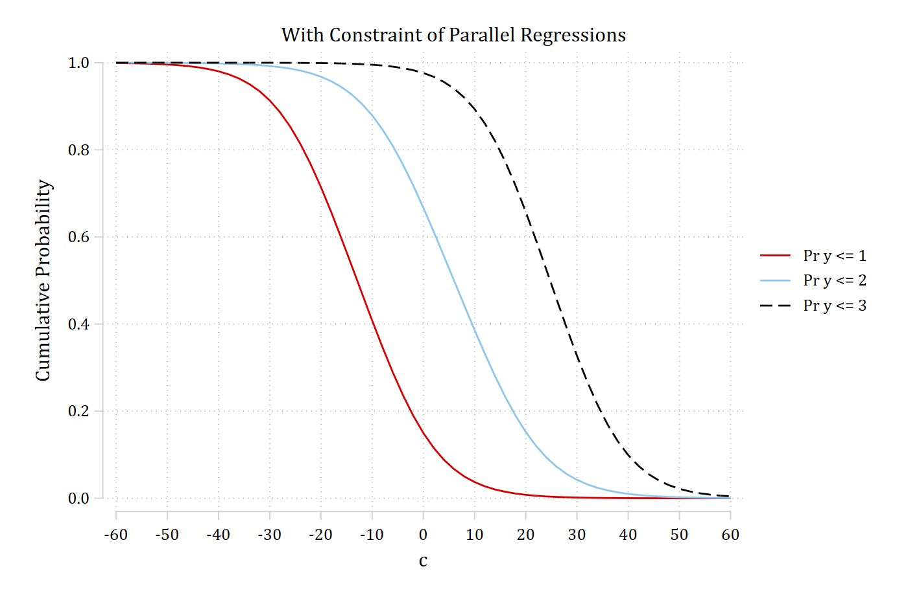
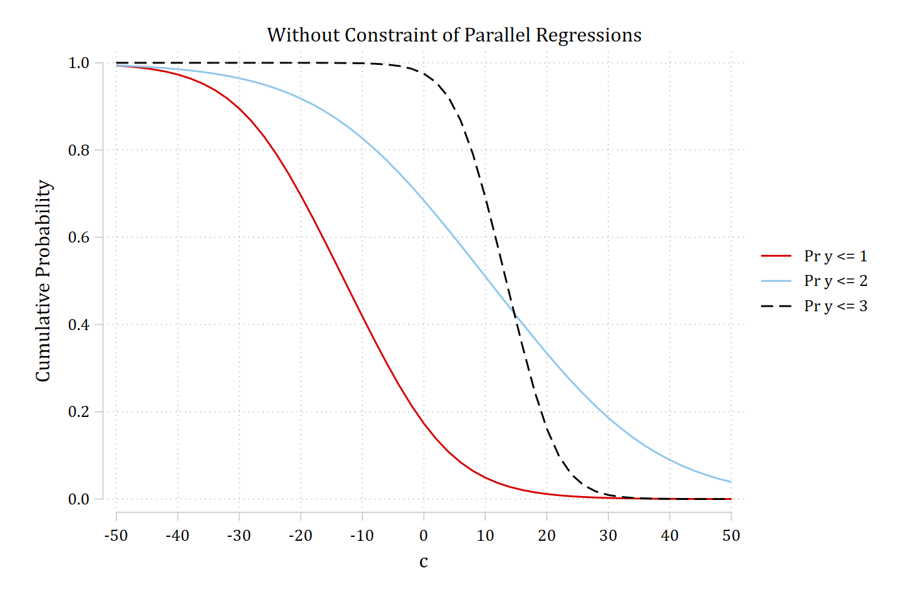
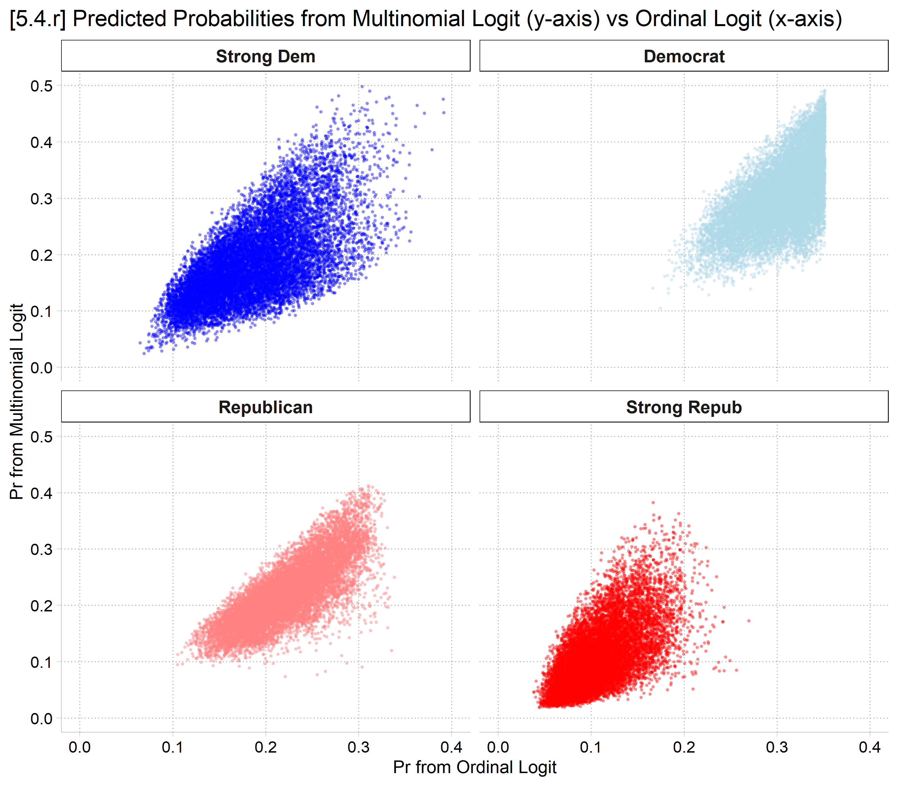
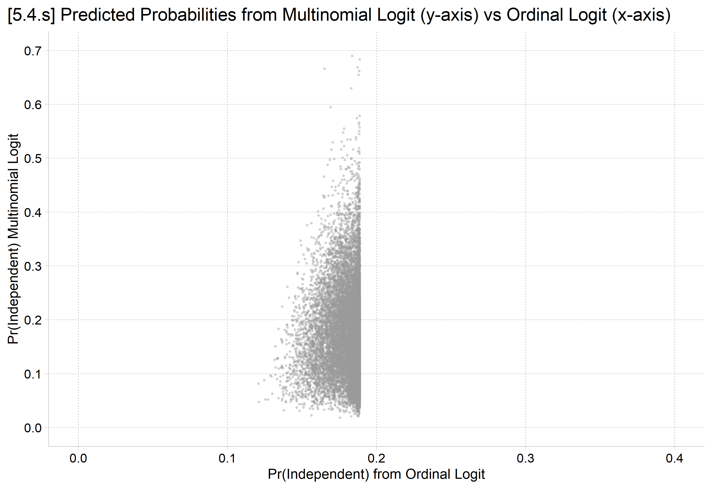

Variables that uniquely identify margins: c _filenumber


library(haven) # import Stata data and labelslibrary(dplyr) # data manipulationlibrary(sjmisc) # frq() frequency tableslibrary(ggplot2) # graphslibrary(MASS) # ordinal logit: polr(); mvrnorm()library(nnet) # multinomial logit: multinom()library(marginaleffects) # predictions and marginal effectslibrary(brant) # Brant test: brant()library(car) # Anova()library(suest) # combine models to compare MEs: suest()library(cleanplots) # graph schemecleanplots_defaults()# Simulate data to show parallel regression assumption# (R's random numbers differ from Stata's, so the estimates differ a little)set.seed(30004)n <-2000sim <-as.data.frame(mvrnorm(n, mu =c(0, 0), Sigma =matrix(c(1, .2, .2, 1), 2),empirical =TRUE)) # x1 and x2 with a small correlationnames(sim) <-c("x1", "x2")sim <- sim |>mutate(c =rnorm(n, 0, 10),b =rep(0:1, each = n /2),y1 =as.numeric(runif(n) <plogis(-3-0.15* c +2* b)),y2 =as.numeric(runif(n) <plogis(0-0.15* c +2* b)),y3 =as.numeric(runif(n) <plogis(3-0.15* c +2* b)),y1A =as.numeric(runif(n) <plogis(-3-0.15* c +2* b)),y2A =as.numeric(runif(n) <plogis(0-0.1* c +2* b)),y3A =as.numeric(runif(n) <plogis(3-0.3* c +2* b)))# Average predicted Pr(y = 1) from a binary logit at values of ccum_pr <-function(outcome, cvalues) { m <-glm(reformulate(c("c", "b", "x1", "x2"), outcome), data = sim, family = binomial)avg_predictions(m, by ="c", newdata =datagrid(c = cvalues, grid_type ="counterfactual"))}cum_labels <-c("Pr y <= 1", "Pr y <= 2", "Pr y <= 3")# Parallel Regressionsparallel <-bind_rows(lapply(c("y1", "y2", "y3"), cum_pr, cvalues =seq(-60, 60, 2)),.id ="outcome")ggplot(parallel, aes(x = c, y = estimate, color = outcome)) +geom_line(linewidth =1) +scale_color_discrete(labels = cum_labels) +scale_x_continuous(breaks =seq(-60, 60, 10)) +labs(title ="With Constraint of Parallel Regressions",y ="Cumulative Probability", color =NULL)
Is the slope for Pr(y ≤ 2) significantly different from Pr(y ≤ 3)? Pr(y ≤ 1)? Etc.
Ordinality assumption revisited
To begin this section, I emphasized the ordinality assumption is about the relationship between the IVs and the DVs—it is an assumption about the model, not just about the DV
Even when your DV is clearly an inherently ordinal DV (e.g., educational degree attainment)—this does not mean your model will meet the ordinality assumption
Consider the graph above: this plots the cumulative probabilities across the range of a continuous IV
Some IVs may produce ordinal relationships with the DV
Some IVs may not
Thus, a DV itself can never satisfy the ordinality assumption of the model
E.g., A DV may pass the assumption in one model or sample, but not an alternative with different IVs, or in a different sample
Formal tests of parallel regressions
The Brant test determines if the coefficients from individual binary logits equal those from the ordinal logit model where they are all constrained to be equal
In Stata, spost13 command brant will calculate this for you; both for each individual IV and an overall test for the model; in R, package brant
Tests often reject the parallel regression assumption
In my experience, they are very sensitive to even minor deviations from perfectly parallel regressions
If rejected, verify the consequences of the assumption by comparing predictions from the ordinal model with a model that does not impose the parallel regression assumption (e.g., multinomial logit)
I would not publish results from ordinal logit when tests indicate a violation of the parallel regression assumption unless I can provide explicit evidence it does not bias conclusions
quiologit pillok c.year1972 c.age i.woman i.religous /// i.college i.race3 c.faminc, oreststore opmod// Test the parallel regression assumptionbrant
Brant test of parallel regression assumption
| chi2 p>chi2 df
-------------+------------------------------
All | 100.80 0.000 16
-------------+------------------------------
year1972 | 0.77 0.681 2
age | 23.89 0.000 2
1.woman | 12.07 0.002 2
1.religous | 37.95 0.000 2
1.college | 8.64 0.013 2
2.race3 | 12.00 0.002 2
3.race3 | 1.42 0.492 2
faminc | 1.01 0.605 2
A significant test statistic provides evidence that the parallel
regression assumption has been violated.
gss <-read_dta("https://tdmize.github.io/data/data/cda_gss.dta")# Religious attendee = attends about once a month or moregss <- gss |>mutate(religous =case_when(attend <=3~0, attend >=4~1)) |>filter(year >=1986)# Keep model variables; drop any missing datagss <- gss[c("pillok", "year1972", "religous", "college", "age", "woman", "race3", "faminc")]gss <- gss[complete.cases(gss), ]# Ordinal DV as a factor with short labels; binary/nominal variables as factorsgss <- gss |>mutate(pillok =factor(pillok, levels =1:4,labels =c("StrAgree", "Agree", "Disagree", "StrDisag")),religous =factor(religous, labels =c("Not Religious", "Religious")),across(c(college, woman, race3), as_factor),year1972 =as.numeric(year1972)) |>droplevels()opmod <-polr(pillok ~ year1972 + age + woman + religous + college + race3 + faminc,data = gss, Hess =TRUE)# Test the parallel regression assumptionbrant(opmod)
----------------------------------------------------
Test for X2 df probability
----------------------------------------------------
Omnibus 100.8 16 0
year1972 0.77 2 0.68
age 23.89 2 0
womanWomen 12.07 2 0
religousReligious 37.95 2 0
collegeCollege Degree 8.64 2 0.01
race3black 12.01 2 0
race3other 1.42 2 0.49
faminc 1.01 2 0.6
----------------------------------------------------
H0: Parallel Regression Assumption holds
A Brant test indicates that the model violates the parallel regression assumption of the ordinal logit model (p < 0.001). Age, gender, religiosity, education, and race all have relationships with views of teenage birth control that may not be strictly ordered in nature (all five individual tests p < 0.05).
Comparing ordinal and nominal predictions
Before blindly accepting or rejecting the ordinal logit model based on a test of parallel regressions, you should also examine whether predictions from the ordinal model differ importantly from those in a model that does not impose ordinality
Effects of assuming wrong level of measurement
Model choice (assumed level of DV for analysis)
True level of DV: Nominal
Ordinal
Continuous*
Nominal
Ideal
Inefficient
Inefficient
Ordinal
Biased
Ideal
Inefficient
Continuous
Biased
Biased
Ideal
*I am not distinguishing between interval and ratio variables here
If outcome is ordinal and model is nominal, it is inefficient, but a safe choice
If outcome is nominal but model is ordinal, you will have biased estimates
Here I compare ordinal logit to multinomial logit
You could also compare predictions to those from the generalized ordered logit model (see Section 5.6)
# Outcome as a factor (and an ordered factor for polr); IVs as factorsparty <- party |>mutate(partyid5 =as_factor(partyid5),party_ord =ordered(partyid5),across(c(woman, parent, married, employed, region4), as_factor),year =factor(year)) |>droplevels() |>as.data.frame()
A Brant test indicates that the model violates the parallel regression assumption of the ordinal logit model (p < 0.001). Both focal variables of age and gender have relationships with political party affiliation that are not strictly ordered in nature.
Multinomial logit model for political party affiliation
# Multinomial Logitmparty <-multinom(partyid5 ~ age + woman + edyrs + parent + married + faminc + employed + region4 + year, data = party, Hess =TRUE, trace =FALSE)# Likelihood-ratio tests (region4 and year are each tested as one variable)Anova(mparty, type =2)
# 5.4.r - Compare predictions for individual obspr_party_obs <-data.frame(outcome =rep(levels(party$partyid5), each =nrow(party)),multinomial =as.vector(predict(mparty, type ="probs")),ordinal =as.vector(predict(oparty, type ="probs"))) |>mutate(outcome =factor(outcome, levels =levels(party$partyid5)))ggplot(filter(pr_party_obs, outcome !="Independent"),aes(x = ordinal, y = multinomial, color = outcome)) +geom_point(size = .3, alpha = .3) +facet_wrap(~ outcome) +scale_color_manual(values = party_colors[-3]) +scale_x_continuous(breaks =seq(0, .4, .1), limits =c(0, .4)) +scale_y_continuous(breaks =seq(0, .5, .1), limits =c(0, .5)) +labs(title ="[5.4.r] Predicted Probabilities from Multinomial Logit (y-axis) vs Ordinal Logit (x-axis)",x ="Pr from Ordinal Logit", y ="Pr from Multinomial Logit") +theme(plot.title.position ="plot", legend.position ="none")

# 5.4.sggplot(filter(pr_party_obs, outcome =="Independent"), aes(x = ordinal, y = multinomial)) +geom_point(size = .3, alpha = .3, color ="gray60") +scale_x_continuous(breaks =seq(0, .4, .1), limits =c(0, .4)) +scale_y_continuous(breaks =seq(0, .7, .1), limits =c(0, .7)) +labs(title ="[5.4.s] Predicted Probabilities from Multinomial Logit (y-axis) vs Ordinal Logit (x-axis)",x ="Pr(Independent) from Ordinal Logit", y ="Pr(Independent) Multinomial Logit") +theme(plot.title.position ="plot")

Testing predictions and effects across models
The comparisons of the ordinal and nominal model in this section are informal
I.e., I did not conduct any significance tests as to whether the predictions and/or MEs were different across the two models
Mize, Doan, and Long (2019) develop a method that can be used to test for differences across the ordinal and multinomial logit models (see example 6.5 in the article)
In Stata, the mecompare command automates these tests
In R, use suest to combine the two model’s estimates, and avg_comparisons to calculate the MEs to compare
*mecompare with two models() combines estimatesusing SUEST and calculates**difference in MEs across modelsmecompare age, models(oparty mparty) amount(sd)
mecompare uses vce(robust) for all models. Standard errors from mecompare will d
> iffer from the specified model(s) because vce(robust) was not used on at least
> one of the models specified in the models( ) option. We strongly recommend re
> fitting the first (ologit) and second (mlogit) models with vce(robust). See vc
> e_option for details on vce(robust).
Predicting: Pr(partyid5)
Marginal effects and cross-model differences (N_oparty=13430) (N_mparty=13430)
| ME # Estimate Robust SE P>|z|
---------------------------------+---------------------------------------
age + SD (centered) |
Strong Dem - oparty | 1 -0.000 0.003 0.851
Strong Dem - mparty | 2 0.041 0.004 0.000
Strong Dem - Difference | 3 -0.041 0.003 0.000
Democrat - oparty | 4 -0.000 0.002 0.851
Democrat - mparty | 5 -0.034 0.004 0.000
Democrat - Difference | 6 0.033 0.004 0.000
Independent - oparty | 7 0.000 0.000 0.850
Independent - mparty | 8 -0.050 0.004 0.000
Independent - Difference | 9 0.050 0.004 0.000
Republican - oparty | 10 0.000 0.002 0.851
Republican - mparty | 11 0.004 0.004 0.301
Republican - Difference | 12 -0.004 0.004 0.281
Strong Repub - oparty | 13 0.000 0.002 0.851
Strong Repub - mparty | 14 0.039 0.003 0.000
Strong Repub - Difference | 15 -0.038 0.003 0.000
# Center changes in continuous IVs on each observation's value (as mecompare does)options(marginaleffects_contrast_direction ="center")# suest combines the estimates of the two modelsparty_suest <-suest(oparty, mparty, model_names =c("oparty", "mparty"))me_age <-avg_comparisons(party_suest, variables =list(age =sd(party$age)),newdata = party)me_age
# Difference between the models for each outcome: oparty - mpartymodel_diffs <-function(x) {data.frame(term =sub("^oparty::", "", x$group[1:5]),estimate = x$estimate[1:5] - x$estimate[6:10])}hypotheses(me_age, hypothesis = model_diffs)
The average marginal effect of age is significantly different across the ordinal and nominal model for the probability of identifying as a strong Democrat, a Democrat, an independent, and a strong Republican (all cross-model differences p < .001). The models suggest similar non-significant effects of age on the probability of identifying as a Republican (cross-model difference p = n.s.).
*binary IV womanmecompare woman, models(oparty mparty)
mecompare uses vce(robust) for all models. Standard errors from mecompare will d
> iffer from the specified model(s) because vce(robust) was not used on at least
> one of the models specified in the models( ) option. We strongly recommend re
> fitting the first (ologit) and second (mlogit) models with vce(robust). See vc
> e_option for details on vce(robust).
Predicting: Pr(partyid5)
Marginal effects and cross-model differences (N_oparty=13430) (N_mparty=13430)
| ME # Estimate Robust SE P>|z|
---------------------------------+---------------------------------------
woman |
Women - Men |
Strong Dem - oparty | 1 0.039 0.005 0.000
Strong Dem - mparty | 2 0.047 0.007 0.000
Strong Dem - Difference | 3 -0.007 0.005 0.129
Democrat - oparty | 4 0.026 0.003 0.000
Democrat - mparty | 5 0.013 0.008 0.114
Democrat - Difference | 6 0.013 0.007 0.080
Independent - oparty | 7 -0.007 0.001 0.000
Independent - mparty | 8 0.001 0.007 0.869
Independent - Difference | 9 -0.008 0.007 0.228
Republican - oparty | 10 -0.032 0.004 0.000
Republican - mparty | 11 -0.049 0.007 0.000
Republican - Difference | 12 0.016 0.006 0.009
Strong Repub - oparty | 13 -0.026 0.003 0.000
Strong Repub - mparty | 14 -0.012 0.005 0.031
Strong Repub - Difference | 15 -0.014 0.005 0.002
# binary IV womanme_woman <-avg_comparisons(party_suest, variables ="woman", newdata = party)me_woman
The cross-model differences for the effect of gender are not significant for strong Democrat, Democrat, and independent (all cross-model differences p > .05). However, the models differ in the size of the gender gap for Republican and strong Republican (both cross-model differences p < .01).
Omnibus tests of difference
Similar to the variable-specific Brant test, we can obtain a single omnibus test of whether the two models’ marginal effects differ or not
This obviates the multiple hypothesis testing issue
To do so, test if all of the differences are simultaneously equal to zero with metest (#s refer to the ME # column of mecompare)
To specify an integer, not a ME, use a # (so #0 = zero)
mecompare uses vce(robust) for all models. Standard errors from mecompare will d
> iffer from the specified model(s) because vce(robust) was not used on at least
> one of the models specified in the models( ) option. We strongly recommend re
> fitting the first (ologit) and second (mlogit) models with vce(robust). See vc
> e_option for details on vce(robust).
Tests of equality
| chi2 df pvalue
---------------------------------+--------------------------------
All differences = 0 | 23.773 4.000 0.000
# The five differences sum to zero, so a joint test of any four of them# tests all differences = 0hypotheses(diff_woman, joint =1:4, joint_test ="chisq")
Overall, the ordinal and nominal models differ in the marginal effects of gender (omnibus test p < .001). This suggests the ordinal model’s assumptions do not hold for gender and are biasing its estimates of gender’s marginal effects.